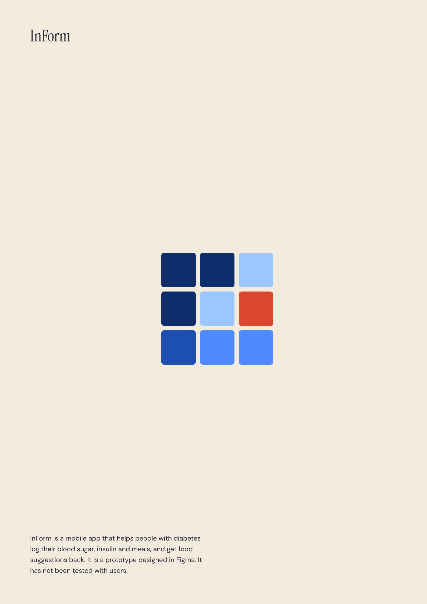
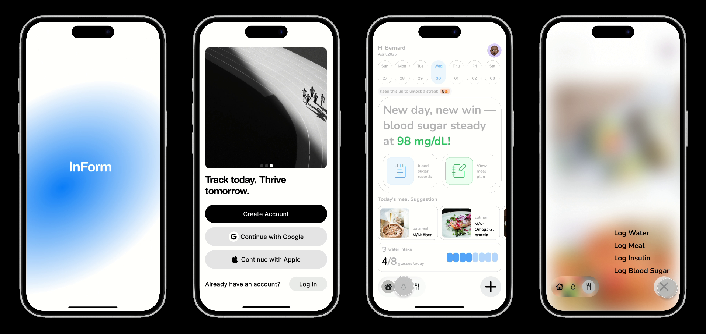
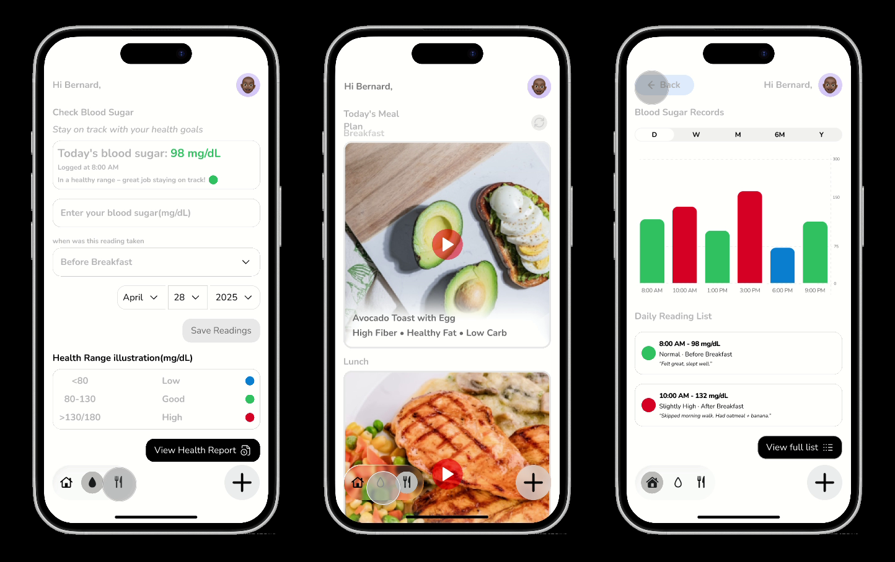

InForm · Full case study

InForm: a diabetes logging app
An interaction design redesign of an untested prototype
Download case study PDF · 1.5 MB1. Introduction
InForm is a mobile app that helps people with diabetes log their blood sugar, insulin and meals, and get food suggestions back.
The idea came from my grandmother, who lives with diabetes. A friend and I talked it through, and he took it on as his final year project. I designed the screens so he would have something concrete to build from.
That was around a year ago. Since then I have redesigned the app on my own in Figma. The onboarding is shorter, the screens are cleaner, and the logging flow is clearer.
I have not tested InForm with users. What I know so far comes from watching my grandmother, which I treat as context, not evidence.
The question running through this project: how do you make daily health logging simple enough that someone keeps doing it?
2. The problem
Seeing how daily choices move blood sugar starts with logging both. InForm tries to make that logging quick.
The scale is large. An estimated 589 million adults aged 20 to 79 live with diabetes, and about 252 million of them are undiagnosed (IDF, 2025). In Ghana, a 2023 national survey of 5,438 adults found that 5.2% had raised fasting blood glucose, and 70.3% had never had their blood sugar checked (WHO Ghana et al., 2023).
Logging is worth the effort. A 2024 meta-analysis of 54 trials of diabetes apps found a larger average drop in HbA1c in studies that included self-monitoring of behaviour (0.46 points) than in those that did not (0.15) (Tarricone et al., 2024). That is an association across studies, not proof that logging causes the gain.
The catch is that people struggle to keep logging. A 2022 review of 28 studies named frequent data entry, lack of time and difficulty with technology as barriers (Alaslawi et al., 2022). It looked at who starts using apps, not who keeps using them.
Diabetes also takes an emotional toll. A 2017 review of 55 studies found that 36% of people with type 2 diabetes reported diabetes-specific emotional distress (Perrin et al., 2017). The apps are not always easy to read either: a 2015 review of 110 diabetes apps, searched in 2014, found that free apps were less likely than paid ones to use everyday words or avoid undefined medical terms (Caburnay et al., 2015).
Picture someone who eats rice and stew at midday, checks their sugar two hours later and sees a high number. Nothing connects the two. This is an illustrative sketch, not a participant.
My starting point was informal. My grandmother finds it hard to link her meals to her blood sugar, and watching that shaped my questions. A conversation with one person is context, not a research finding.
For now, InForm is for any adult living with diabetes. Version 2 will narrow to a more specific group. The app also assumes a smartphone, and in the 2021 census 4.9 million Ghanaians aged 15 and over did not own a smartphone (Ghana Statistical Service, 2023).
There is no client or business model behind InForm. The nearest thing to a business constraint was scope, because the project began as a friend's final year project.
3. The app
InForm asks for little up front, then puts every logging action behind one button. These are the moments in the order someone meets them.
Setup takes two screens. After a short intro, the app asks for diabetes type, age at diagnosis and insulin use, then says welcome. That is three questions on two screens. The earlier version asked four questions across four screens, including body weight.
Home shows today at a glance. A week strip, a streak prompt, the latest reading, shortcuts to records and the meal plan, meal suggestions and a water counter sit on one screen. Nothing needs to be opened to see how the day is going.
One button starts every log. The plus button sits beside the navigation bar, so it is on every main screen. It opens four options: Log Water, Log Meal, Log Insulin and Log Blood Sugar. I put it there to make logging quick, wherever you are in the app.

Left to right: splash, intro, home, and the plus menu with its four options. Screens from the Figma prototype.
Logging blood sugar is a short form. You enter the reading, say when it was taken, such as Before Breakfast, set the date and save. A range guide sits underneath: below 80 is Low (blue), 80 to 130 is Good (green), above 130 is High (red).
Logging a meal is a list and a plus. Each meal has a photo, a short nutrition note and a plus to log it. No typing is needed on this screen.
Looking back is a chart and a list. Records show readings by day, week, month, six months or year, in the same three colours. Below the chart, each reading is listed with its time, a label such as Normal and an optional note.

Left to right: the blood sugar form, the meal plan and the records chart. Names, dates and readings are placeholder content.
Meal names, nutrition notes and readings in the prototype are placeholder content. This case study is about the interaction, not the nutrition data.
4. Design process
I considered a PDF export, so someone could hand their doctor a printed summary. I set it aside for this version because of file size and scope constraints. I want to find a way around them in a later one.
I also considered logging more health metrics than blood sugar, insulin and meals. I kept the set narrow to keep the app focused. Frequent data entry is a reported barrier to using diabetes apps, so each extra field has a cost.
The clearest change was to onboarding. The earlier version asked four questions over four screens, including body weight. I dropped that version when it started to feel too long for a first use. Body weight was the easiest cut: a hospital already checks and records it at every visit, so asking again added a step without adding anything new. I made that call by reviewing the flow myself, not from user testing.
The plus button puts one extra step between someone and a log: one tap to open the menu, one to choose an action. I chose it because it sits beside the navigation on every main screen, so logging is reachable from anywhere in the app. I have not tested whether that is faster than other layouts.
5. Challenges
The hardest problem was logging that someone would actually keep doing. Frequent data entry is one of the barriers reported in the research, and that research looks at who starts using diabetes apps, not who keeps using them. InForm answers this with the single plus button and short forms, so each log takes as few steps as possible, but a short form is not proof that someone will open the app on day thirty.
A few things are still unsolved. I have not tested InForm with anyone outside informal conversations, so I do not know if the logging flow is actually fast in practice. The meal names, nutrition notes and blood sugar readings in the prototype are placeholder content, not verified figures, which is fine for showing the interaction but means none of it should be read as real guidance yet. I also found the same morning's blood sugar reading shown as three different numbers across the home screen, the check screen and the reading list, a consistency bug I have since fixed in a cleaned copy of the file but which shows how easily small inconsistencies creep into a prototype built over time.
The response to these gaps is not to claim they are solved. It is to say plainly what is tested, what is placeholder, and what would need checking before this became a real product.
6. What's next
Nothing about InForm has been measured yet, so the next step is to test it.
InForm is a prototype in Figma, and nobody beyond informal conversations has used it. What I can describe is what changed in the design. Onboarding went from four questions over four screens to three questions over two, and every log now starts from one button. I cannot yet say that either change helped.
How I would test it. I would run a small usability test with five people, including some who are not confident with smartphones. Each would try three tasks: log a blood sugar reading, log a meal, and find yesterday's reading. I would watch where they hesitate, listen to what they say aloud, and count how many finish without help.
I would then ask a few of them to use it for two weeks, to see whether logging continues past the first day. Five people cannot prove anything, so I would report the result as a first look, not a finding.
What version 2 would add.
- A narrower audience. Version 1 is for any adult living with diabetes. Version 2 will pick a more specific group, so the choices fit that group and not everyone.
- Blood pressure logging. It is not in the prototype yet. I want it because a doctor can ask a patient to track it between visits.
- User profiles. An option to say, for example, that you are breastfeeding, so food suggestions can fit that situation. Any real guidance would need checking by a dietitian first.
- A summary for the doctor. The PDF export I set aside, once I find a way around the file size.
- Real content. Replace the placeholder names, dates and meal data, and check the nutrition notes with a professional.
References
- International Diabetes Federation. (2025, 7 April). Over 250 million people worldwide unaware they have diabetes, according to new IDF research. Press release for the IDF Diabetes Atlas, 11th edition.
- WHO Country Office Ghana, Ministry of Health, Ghana Health Service and Ghana Statistical Service. (2023). Ghana analytic factsheet: 2023 STEPS survey findings, raised blood glucose.
- Tarricone, R., Petracca, F., Svae, L., Cucciniello, M., & Ciani, O. (2024). Which behaviour change techniques work best for diabetes self-management mobile apps? A systematic review and meta-analysis of randomised controlled trials. eBioMedicine, 103, 105091. https://doi.org/10.1016/j.ebiom.2024.105091
- Alaslawi, H., Berrou, I., Al Hamid, A., Alhuwail, D., & Aslanpour, Z. (2022). Diabetes self-management apps: systematic review of adoption determinants and future research agenda. JMIR Diabetes, 7(3), e28153. https://doi.org/10.2196/28153
- Perrin, N. E., Davies, M. J., Robertson, N., Snoek, F. J., & Khunti, K. (2017). The prevalence of diabetes-specific emotional distress in people with type 2 diabetes: a systematic review and meta-analysis. Diabetic Medicine, 34(11), 1508-1520. https://doi.org/10.1111/dme.13448
- Caburnay, C. A., Graff, K., Harris, J. K., McQueen, A., Smith, M., Fairchild, M., & Kreuter, M. W. (2015). Evaluating diabetes mobile applications for health literate designs and functionality, 2014. Preventing Chronic Disease, 12.
- Ghana Statistical Service. (2023). The 2021 PHC thematic brief on digital exclusion.
Want to keep it or share it? Download the full case study as a PDF.
Download case study PDF · 1.5 MB